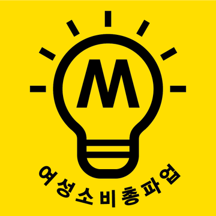
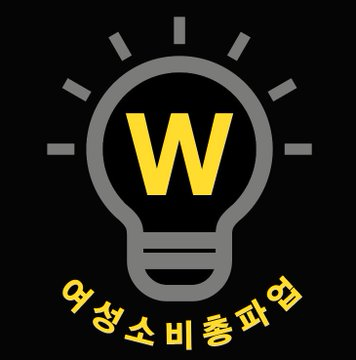

1 개요
여성소비총파업(이하 여소총파)은 매월 첫 번째 일요일에 소비를 하지 않음으로써 여성 소비자들을 가시화하기 위한 운동이다.
트위터 공식 계정 @K_W_G_C_S에 의해 19차동안 진행되었으나 20차 여소총파 날인 2020년 2월 2일 여소총파의 한계점을 알리며 공식 계정의 운영이 일시정지되었다.
2 운동 계기
2018년 6월 13일 즈음 한 커뮤니티에서 70년대 아이슬란드 여성들이 거리로 뛰쳐나와 파업하며 여성들의 존재를 가시화했으니 대한민국도 그렇게 파업하면 좋겠다는 내용의 글이 올라왔고, 여소총파 공식 계정이 만들어지며 운동이 진행되었다.
3 운동 방법
- 매월 첫 번째 일요일 비소비 운동
- #소비불끄기 #10분간SNS정전 퍼포먼스
매월 1일 ~ 첫 번째 토요일: 불 켜진 인장 / 매월 첫 번째 일요일: 불 꺼진 인장으로 변경
21:00 - 해시태그와 꺼진 전구 인장 게시 후 10분간 계신 곳의 전력 소등과 SNS 중단을 통해 연대를 확인.
21:10 - 퍼포먼스의 마무리로 켜진 전구 인장 게시
- #38적금인증
여성의 날인 3월 8일을 기념하여 38로 시작하는 금액을 적금 통장에 넣습니다. ex) 3,838원, 3,800원, 38,000원
- #여성소비총파업_포스트잇_인증
1. 포스트잇이나 종이에 '#여성소비총파업 #매월첫일요일, 우리가 멈추면 세상도 멈춘다'를 적습니다.
2. 직장이나 학교, 유동인구가 많은 대형마트, 백화점, 영화관, 도서관, 지하철 등 공공 화장실에 포스트잇과 종이를 가져갑니다.
3. 화장실 칸 안쪽에 포스트잇과 종이를 붙이고 인증샷을 찍고 나옵니다.
4. 불법 촬영 카메라 구멍으로 의심되는 곳에 붙이시길 추천합니다. - 여성소비총파업 컷툰 제작
1. 소비중단팁 - 여성소비총파업 카드뉴스 제작
1. 문화예술계 여성혐오 비판
2. 일상 속 여성혐오 비판
3. 의류 핑크택스 고발
4. 아동 성적대상화, 성상품화 고발
5. 명절 여성혐오
6. 새학기 여성혐오
7. 여성 과학자 가시화
8. 결혼제도 속 여성혐오
9. 4인가구 위주의 복지정책 비판 및 대안공동체 제안
10. 투명한 남성가해자들
11. 쇼윈도 속의 여성
12. 동일노동 동일임금
13. 비혼여성의 경제
14. 번아웃
4 한계점
여소총파는 다음과 같은 한계점을 밝히며 운동을 일시정지하고 재정비의 시간을 가졌다.
- 여성 소비자들을 가시화하기 위한 운동임에 반해 비소비 운동의 특성 상 참여자들의 성과가 가시화되지 않음.
- 피치 못할 사정으로 소비를 하게 되면 운동에 참여할 수 없음.
- 여소총파 팀에서 여성친화기업을 소개하며 운동에 활력을 불어넣으려 했으나 비소비라는 운동 성격에 맞지 않았고 여성친화기업들 또한 크고 작은 문제점이 존재했음.
- 여성혐오기업을 사람들에게 알리고 불매 운동을 하자고 주도한다면 법률적 문제를 피할 수 없을 것이라고 판단.
- 여소총파 팀에 수익이 전혀 없고 팀원들이 대가를 받을 수 없었음.
- 여성의 경제권을 회복하고자 모인 집단에서 스탭의 생활과 권리를 존중하지 못함.
여소총파는 재정비하는 시간을 가지며 피드백을 받고 있다.
5 의의
- 여성이 소비의 주체임을 가시화하고자 하는 운동이었다.
- 공식 계정의 운영이 일시정지되었음에도 불구하고 사람들은 계속해서 매월 첫 번째 일요일 여소총파 운동을 계속하고 있다.